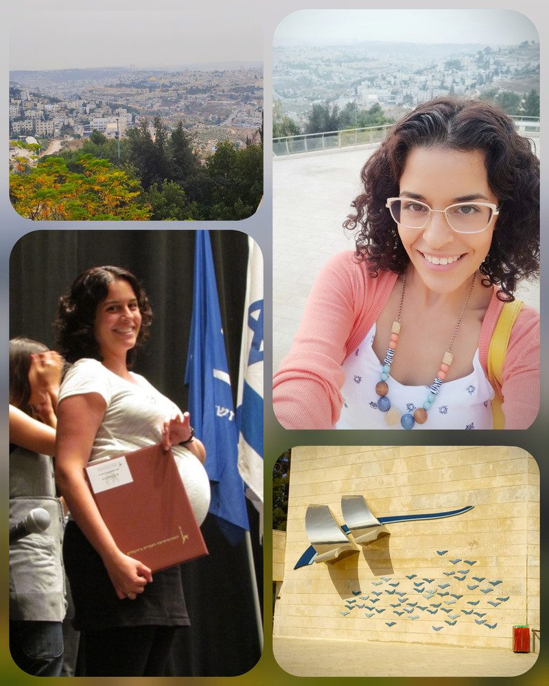

פאנל בוגרות 2021 - אבחון וטיפול בלקויות למידה - האוניברסיטה העברית

היא התקשרה אלי לפני כמה שבועות
והזמינה אותי להשתתף ב #פאנל_בוגרות
של המגמה לאבחון וטיפול בלקויות למידה ב- #אוניברסיטה_העברית ..
החמיא לי מאוד
שמחתי, ושריינתי לי את התאריך!
כשהגעתי ליוו אותי פרפרי התרגשות
עשורררר לא הייתי כאן!!!
מאז טקס הסיום ב2011
הרגליים הובילו אותי, באופן אוטומטי..
הן זכרו את הדרך ואת המקום.
הגעתי יחד עם עוד 3 בוגרות,
לספר לסטודנטיות על אפשרויות התעסוקה לאחר התואר.
היה פשוט תענוג צרוףף!
נהנתי מכל רגע על הבמה!
לספר את הסיפור שלי,
לשתף בדרך שעברתי,
לתת השראה לסטודנטיות המקסימות,
הצצה קטנה לעולמי
ובעיקר להעביר להן,
שהכל אפשרי ויקרה בדרך זו או אחרת.
שיחשבו מה *הן* רוצות,
ישקלו את הבחירות שלהן,
יקבלו הדרכה מקצועית במקום אליו הן מגיעות,
יצברו ניסיון בתחום..
ויום יבוא,
גם הן יפרסו כנף,
ירגישו משמעותיות ומסופקות בתפקידן,
וידעו שהן במקום הנכון להן!
